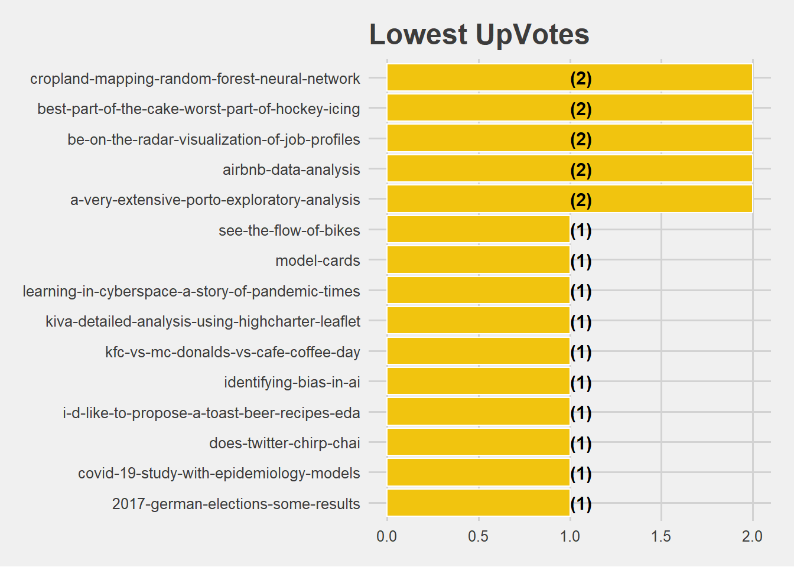

Chapter 15 Lowest Number of Votes after Hidden Gem Declaration
The notebooks which got the lowest votes after the Hidden Gem declaration are shown below
kernel_gems_votes %>%
filter(VoteDate > date) %>%
group_by(CurrentUrlSlug) %>%
summarise(Count = n()) %>%
arrange((Count)) %>%
head(15) %>%
ungroup() %>%
mutate(CurrentUrlSlug = reorder(CurrentUrlSlug,Count)) %>%
ggplot(aes(x = CurrentUrlSlug,y = Count)) +
geom_bar(stat='identity',colour="white", fill = fillColor2) +
geom_text(aes(x = CurrentUrlSlug, y = 1, label = paste0("(",Count,")",sep="")),
hjust=0, vjust=.5, size = 4, colour = 'black',
fontface = 'bold') +
labs(x = 'CurrentUrlSlug',
y = 'Count',
title = 'Lowest UpVotes') +
coord_flip() +
theme_fivethirtyeight()
a = s %>%
arrange((Count)) %>%
head(15) %>%
select(notebook,title,review)
a %>%
gt() %>%
tab_header(
title = "Lowest Votes after the Hidden Gem Declaration")| Lowest Votes after the Hidden Gem Declaration | ||
|---|---|---|
| notebook | title | review |
| https://www.kaggle.com/huguera/i-d-like-to-propose-a-toast-beer-recipes-eda | I’d like to propose a toast! | Hugo is brewing a delicious exploration of beer recipes, their popularity, and their ingredients. Go to his notebook, have a nice cold pint, and wait for this whole Covid thing to blow over. |
| https://www.kaggle.com/vrindaprabhu/does-twitter-chirp-chai | Does Twitter Chirp Chai? | The female winner of the competition presents a well-focussed analysis of the social media aspect of the CTDS interviews. Engaging and humourous narration makes this Notebook a joy to read. |
| https://www.kaggle.com/umeshnarayanappa/kiva-detailed-analysis-using-highcharter-leaflet | Kiva-Detailed Analysis using Highcharter & Leaflet | This work presents a diverse range of interactive visualisations to study global crowdfunding efforts to alleviate poverty. The highcharter time series and the leaflet maps are particularly powerful. |
| https://www.kaggle.com/alexisbcook/identifying-bias-in-ai | Identifying Bias in AI | This Notebook constitutes a key lessons in Kaggle's new [Intro to AI Ethics course](https://www.kaggle.com/learn/intro-to-ai-ethics). Understanding sources of bias is crucial as ML products become more and more powerful. |
| https://www.kaggle.com/var0101/model-cards | Model Cards | The final entry in Kaggle's new [Intro to AI Ethics course](https://www.kaggle.com/learn/intro-to-ai-ethics) discusses the concept of [Model Cards](https://arxiv.org/abs/1810.03993) which aim to promote informed usage of models via increased transparency and documentation. |
| https://www.kaggle.com/yclaudel/see-the-flow-of-bikes | See the flow of bikes | This work present a visual analysis of bike sharing flow from a city of Toronto dataset; complete with clusters, maps, and network graphs that showcase the bike movement. |
| https://www.kaggle.com/jonathanbouchet/2017-german-elections-some-results | 2017 German Elections : some results | A somewhat topical entry, this notebook produces expert visuals to analyse the previous German voting patterns in 2017. Lots of inspiration to study and compare the recent 2021 election. |
| https://www.kaggle.com/akashguna/kfc-vs-mc-donalds-vs-cafe-coffee-day | KFC vs Mc Donalds Vs Cafe Coffee Day | Get your morning coffee (and snacks!) in Bangalore using this compact Notebook, which features a map, summary visuals, and detailed interpretation of the findings. |
| https://www.kaggle.com/mauromauro/learning-in-cyberspace-a-story-of-pandemic-times | Learning in Cyberspace: a Story of Pandemic Times | A comprehensive study of online learning during Covid-19, featuring carefully designed visuals, extensive interpretations, and multiple related datasets for context and augmentation. |
| https://www.kaggle.com/volpatto/covid-19-study-with-epidemiology-models | COVID-19 Study with Epidemiology models | This work presents a comprehensive study of Covid-19 progressions from the early days of the pandemic. Featuring well illustrated implementations of epidemiological models. |
| https://www.kaggle.com/kailex/santander-eda-features | Santander: EDA + features | A great example for an end-to-end framework to model anonymised & sparse tabular data. The next Santander competition is never far away ;-) |
| https://www.kaggle.com/rahulgulia/what-s-this-chai-and-datascience | What's this? Chai and DataScience? | Another excellent analysis of CTDS show data (see Vol. 12), where great storytelling & structure are interspersed by entertaining visuals. |
| https://www.kaggle.com/martinellis/best-part-of-the-cake-worst-part-of-hockey-icing | Best part of the cake, worst part of Hockey: Icing | From the magnificent title pun to the fun little sketches; this Notebook is a joy to read. I learned much more about ice hockey oddities than I had expected. |
| https://www.kaggle.com/ambarish/fun-with-meteorites-landings-w-maps | Fun with Meteorites Landings w/ Maps | An extensive exploration of meteorites found on earth. Note the use of interactive leaflet maps to explore the global distributions of impact sites and meteorite characteristics. |
| https://www.kaggle.com/captcalculator/a-very-extensive-porto-exploratory-analysis | A Very Extensive Porto Exploratory Analysis | A compact visual EDA and baseline model that deals with the challenges of anonymised features and imbalanced targets. Clear organisation helps the reader to navigate the relatively large feature set. |